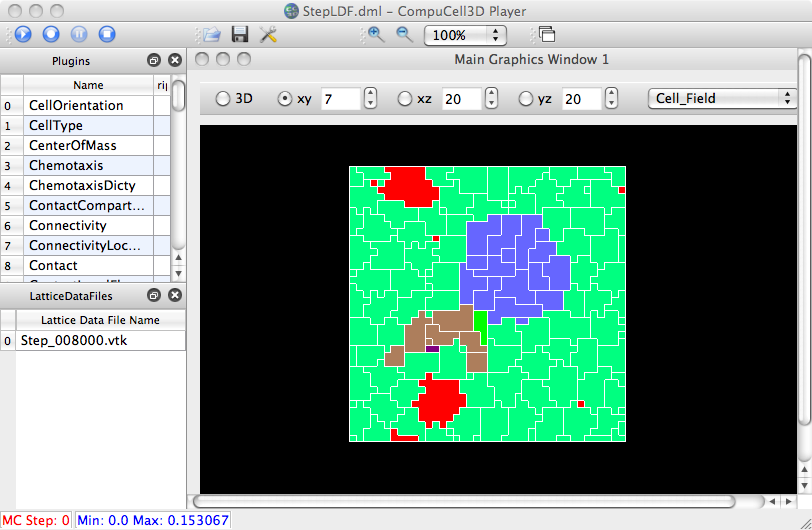

This .vtk file is from Abbas's sim (AMD?) and shows the correct display now some of the earlier bogus renderings. However, there remain questions/tests for vector fields and 3-D displays and user-adjustable colormap (e.g. for oxygen).
